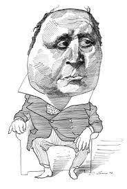

Anti-Environments
Anti-Environments
"One thing about which fish know exactly nothing is water, since they have no anti-environment which would enable them to perceive the element they live in." —Marshall McLuhan
 |
Henry James |
For an excellent example of anti-environments (or counter-environments) we need look no further than the career of Henry James. Had he remained a New Yorker in geography and sensibility, his literary output might have turned out to be ordinary and undistinguished. He would, like McLuhan's proverbial fish, have known nothing different than the milieu he was born to and hence never fully understood the element he inhabited. As Frank Leavis makes clear in the following passage from The Great Tradition, James was fortunate in both the quality and number of his influences:
His interests, of course, are very different from Jane Austen's, being determined by a contrasting situation. His problem was not to balance the claims of an exceptional and very sensitive individual against the claims of a mature and stable society, strong in its unquestioned standards, sanctions and forms. The elements of his situation are well known. He was born a New Yorker at a time when New York society preserved a mature and refined European tradition, and when at the same time any New Yorker of literary and intellectual bent must, in the formative years, have been very much aware of the distinctive and very different culture of New England. Here already we have an interplay likely to promote a critical attitude, and an emancipation from any complete adherence to one code or ethos. Then there was the early experience of Europe and the final settling in England. It is not surprising that, in the mind of a genius, the outcome should be a bent for comparison, and a constant profound pondering of the nature of civilized society and of the possibility of imagining a finer civilization than any he knew. Thus his derivative New York environment, influenced by 'a mature and refined European tradition,' was challenged by a distinctly different New England culture (Melville and Hawthorne). And the fusion of these two cultures was further refined by his exposure to the society and literature of Europe (Gustave Flaubert and Ivan Turgenev) and England (Jane Austen and George Eliot). These encounters with anti-environments not only enriched the content of his novels, they prompted a philosophic attitude of inquiry and quest for 'a finer civilization than any he knew.'